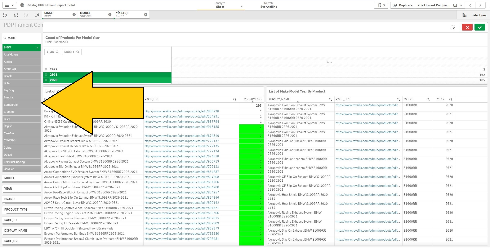
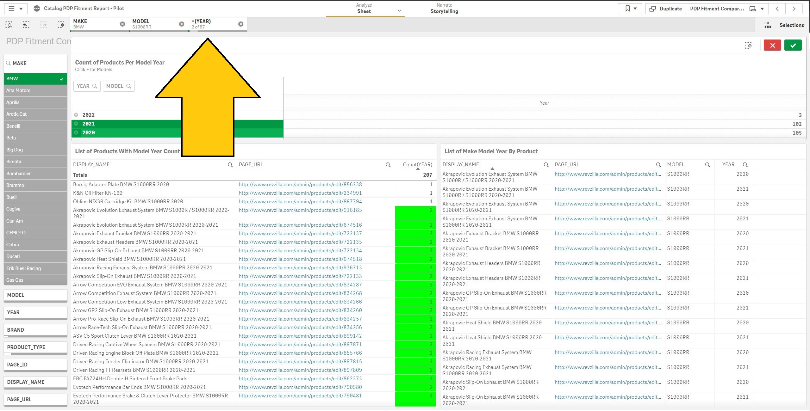
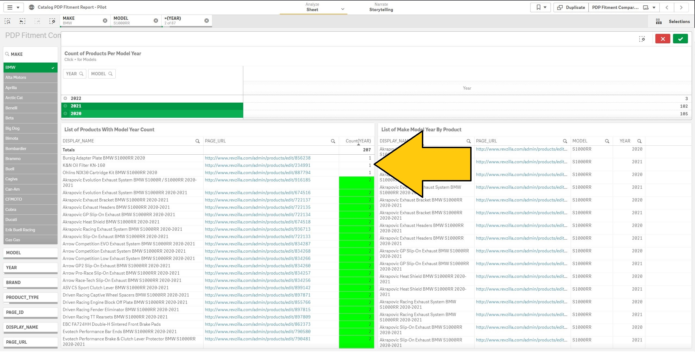
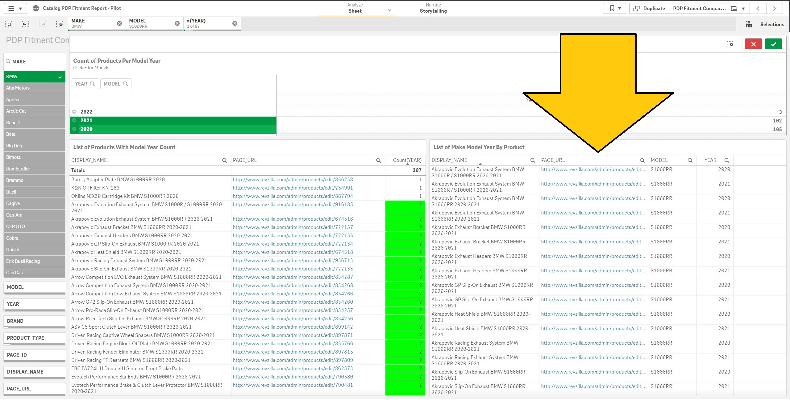

Qlik Fitment Dashoard README
The goal of the Qlik Fitment Dashoard is to create a list of product pages that require an audit for their fitment. Due to the product library outgrowing the company's PIMS (Product Information Management System) capacity, it was not longer scalable to reply on the PIMS system to reliablily filter for products and/or fitment.
{kind=link}

- This dashboard includes filterable attributes such as:
- Make
- Model
- Year
- Brand
- Product Type
- Page ID
- Display Name
- Page URL
- In this example we have filtered by:
- Make - BMW
- Model - S1000RR
- Year - 2020 & 2021
- The result(s) on the left table are product page name, page url, and a count of the filtered make, model, year(s) that live on each page.
- Note: The descisions listed below are under the presumption that all parts from the 2020 model year carry over into 2021 model year.
- If there is the number 2 displayed in green. This means the product page requires no audit
- If there is the number 1 displayed. This means the product page DOES require an audit
- The dashboard links directly to the back end of the each product page to run said audit(s)
- The result(s) on the right table displays each model(s) and year(s) that live on each page.
- It will filter down in real time based on the product page selected from the left table
- This table is best utilized when auditing a single product page for a single make but multiple models and years.
{kind=link}

{kind=link}

{kind=link}
